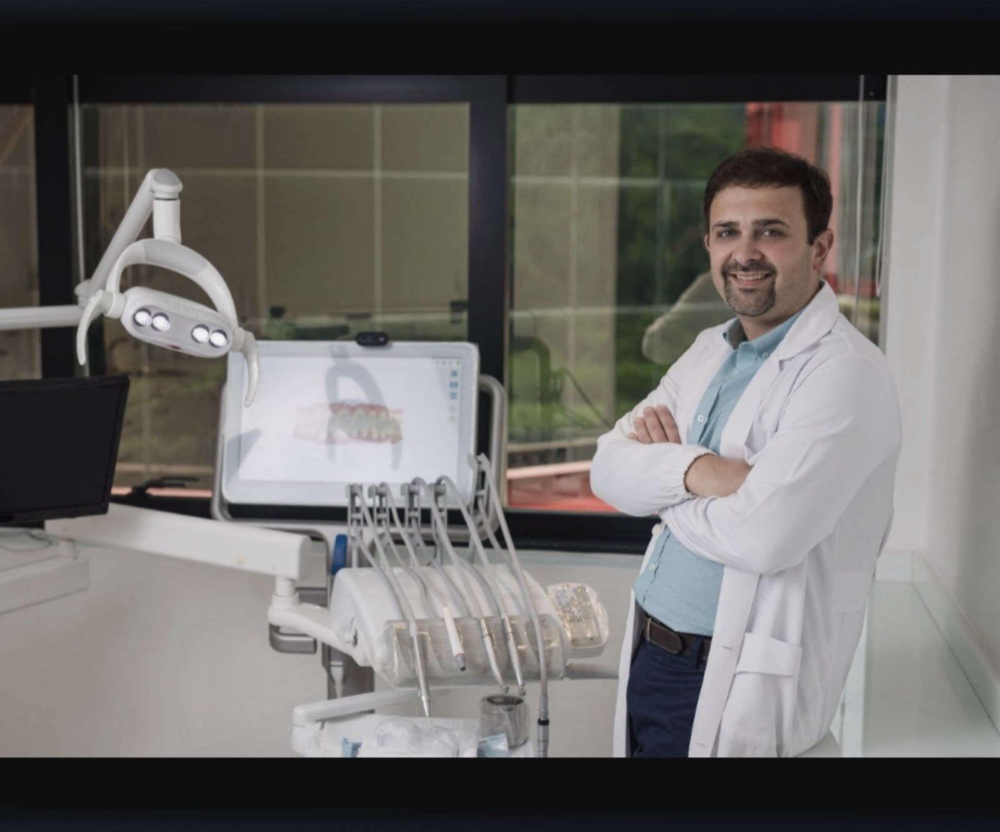

Recupere a função e a estética do seu sorriso com soluções protéticas modernas, fixas ou removíveis, desenvolvidas por especialistas com mais de 30 anos de experiência.
A prótese dentária é uma solução odontológica voltada para restituir a forma, função e estética dos dentes ausentes ou comprometidos. Na MD Frossard, cada prótese é planejada individualmente, levando em conta a anatomia do paciente, suas necessidades funcionais e suas expectativas estéticas.
Existem dois grandes grupos de próteses: as próteses fixas — como coroas, pontes, inlays e onlays — que só o profissional remove; e as próteses removíveis — parciais ou totais (dentaduras) — que o próprio paciente pode retirar para higienização.
Independentemente do tipo escolhido, o objetivo é sempre o mesmo: devolver ao paciente a capacidade de sorrir, mastigar e falar com conforto e confiança.
Utilizamos materiais de última geração, como zircônia e cerâmica pura, seguros e com alta durabilidade.
As coroas e pontes totalmente cerâmicas são praticamente indistinguíveis dos dentes naturais.
Cada caso é analisado em detalhes para indicar a melhor solução protética para o seu perfil.
Nossa equipe acumula décadas de expertise em reabilitação oral completa.
Conheça as principais opções de próteses fixas e removíveis disponíveis na MD Frossard.
Restauração cimentada que recobre a superfície externa da coroa clínica. Reproduz a morfologia e os contornos dos dentes danificados enquanto restabelece sua função mastigatória e aparência.
Aplicação permanentemente ligada aos dentes remanescentes, substituindo um ou mais dentes ausentes. Pode ser confeccionada em metalocerâmica, metaloplástica ou porcelana pura.
Restauram dentes destruídos por cárie ou traumatismo, que resultam na perda parcial da porção coronária. São confeccionados em laboratório com alta precisão e encaixados no dente.
Feitas de zircônia ou cerâmica pura, oferecem resistência superior e estética inigualável. Não possuem infraestrutura metálica, eliminando o risco de escurecimento da gengiva e proporcionando aparência absolutamente natural.
Destinada à reposição de dentes perdidos e tecidos adjacentes. É planejada para ser retirada pelo próprio paciente para higienização. Indicada quando não é possível realizar prótese fixa ou implantes.
Para pessoas que perderam todos os dentes. As dentaduras restauram o sorriso e auxiliam nas atividades do dia a dia, como comer e falar. Requerem um período de adaptação e acompanhamento profissional.
A zircônia representa o que há de mais moderno em prótese dentária, unindo estética e durabilidade.
Coroas metalocerâmicas podem apresentar uma margem metálica visível quando a gengiva retrai. Com coroas cerâmicas puras, esse problema não ocorre — a aparência permanece natural em qualquer situação.
A zircônia é um material biocompatível cientificamente comprovado, capaz de se integrar harmonicamente com os tecidos que a rodeiam, favorecendo a adaptação natural da gengiva ao redor das coroas.
Além da resistência necessária para suportar as forças da mastigação, a zircônia oferece característica estética excepcional, sem o aspecto metálico das coroas tradicionais e com alta longevidade clínica.
A oclusão inadequada pode causar danos progressivos aos dentes e estruturas adjacentes. Os sinais de que seus dentes estão sob estresse podem ser identificados por meio de um exame clínico rigoroso.
As doenças dentais mais frequentes associadas a problemas de mordida incluem:
O tratamento pode ser protético, ortodôntico ou cirúrgico, dependendo da avaliação do especialista.
Identificou algum desses sintomas? Agende uma avaliação com nossos especialistas.
Falar com EspecialistaDa avaliação inicial à instalação da prótese, acompanhe cada etapa do seu processo de reabilitação oral.
Exame detalhado da saúde bucal, análise de raio-x e tomografia quando necessário. Identificamos os dentes comprometidos e planejamos a melhor solução protética para o seu caso.
Realizamos moldagens de alta precisão dos seus dentes e gengiva. O modelo serve de base para o laboratório confeccionar sua prótese com perfeito encaixe e harmonia.
Sua prótese é fabricada com materiais premium de última geração — zircônia, cerâmica ou resina — por técnicos especializados que garantem precisão milimétrica e estética impecável.
A prótese é instalada com cuidado, testando oclusão e encaixe. Fazemos todos os ajustes necessários para garantir seu conforto total antes da instalação definitiva.
Retornos programados para verificar a adaptação da prótese, saúde gengival e satisfação do paciente. Orientações de higiene e manutenção para prolongar a vida útil da sua prótese.
Consultas periódicas para inspeção da prótese, limpeza profissional e eventuais ajustes. Garantimos que seu investimento dure o maior tempo possível com qualidade plena.
Respondemos as perguntas mais comuns sobre prótese dentária.
As próteses fixas — como coroas, pontes e inlays — são cimentadas ou parafusadas e só podem ser removidas pelo dentista. As removíveis — parciais ou dentaduras — podem ser retiradas pelo próprio paciente para limpeza. A indicação depende da condição de saúde bucal, do número de dentes ausentes e das preferências do paciente.
Sim. A zircônia é um material cerâmico de alta resistência, capaz de suportar as forças da mastigação com segurança. Além da resiliência mecânica, ela oferece estética superior, com aparência idêntica ao esmalte dental natural, sem linhas acinzentadas na gengiva — um problema comum nas coroas metalocerâmicas tradicionais.
Com boa higienização e acompanhamento regular, uma prótese fixa de qualidade pode durar de 10 a 20 anos ou mais. As próteses removíveis geralmente precisam de ajustes ou substituição após 5 a 8 anos, pois o osso e a gengiva sofrem reabsorção natural com o tempo, alterando o encaixe da peça.
O procedimento é realizado com anestesia local, garantindo total conforto durante a sessão. Após a instalação, é normal sentir leve sensibilidade por alguns dias enquanto a gengiva se adapta à nova prótese. Na MD Frossard priorizamos o conforto e bem-estar do paciente em todas as etapas do tratamento.
A prótese removível deve ser retirada após as refeições e higienizada com escova específica e creme dental suave ou sabão neutro. À noite, deve ser mantida em solução de imersão adequada. A boca também deve ser higienizada, inclusive a gengiva e o palato, antes de recolocar a prótese.
O implante é considerado a solução mais próxima do dente natural, pois é fixado diretamente no osso e não requer o desgaste de dentes vizinhos. No entanto, existem casos em que a prótese convencional (ponte ou removível) é mais indicada, como quando o volume ósseo é insuficiente para o implante ou há restrições sistêmicas. Agende uma avaliação para saber qual a melhor opção para você.
Agende uma consulta com nossa equipe de especialistas e descubra a melhor solução protética para o seu caso.